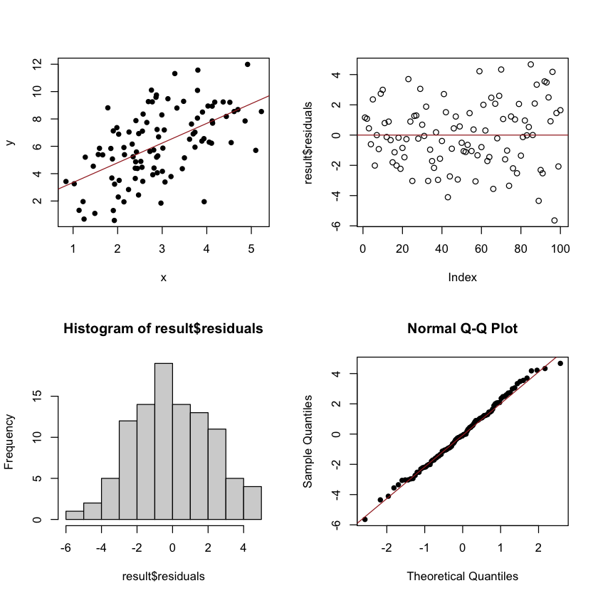
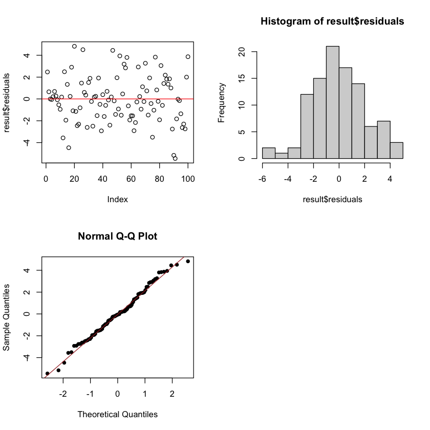

Lab 9: Linear regression#
Simple linear regression#
Simulating linear regression data#
x = rnorm(100, mean=3, sd=1)
error = rnorm(100, mean=0, sd=2)
y = 2.1+1.25*x+error
data=data.frame(cbind(x,y))
Fitting the linear regression model#
result = lm(data$y~data$x)
summary(result)
Call:
lm(formula = data$y ~ data$x)
Residuals:
Min 1Q Median 3Q Max
-5.6426 -1.4897 -0.0916 1.3337 4.6732
Coefficients:
Estimate Std. Error t value Pr(>|t|)
(Intercept) 1.9147 0.6569 2.915 0.00441 **
data$x 1.4406 0.2137 6.743 1.08e-09 ***
---
Signif. codes: 0 ‘***’ 0.001 ‘**’ 0.01 ‘*’ 0.05 ‘.’ 0.1 ‘ ’ 1
Residual standard error: 2.148 on 98 degrees of freedom
Multiple R-squared: 0.3169, Adjusted R-squared: 0.3099
F-statistic: 45.47 on 1 and 98 DF, p-value: 1.084e-09
Residual plot#
par(mfrow=c(2,2))
plot(x,y,pch=16)
abline(result,col="brown")
plot(result$residuals)
abline(a=0,b=0, col="brown")
hist(result$residuals)
qqnorm(result$residuals, pch=16)
qqline(result$residuals, col = "brown")

Checking normality#
shapiro.test(result$residuals)
Shapiro-Wilk normality test
data: result$residuals
W = 0.99362, p-value = 0.9224
Prediction for new observations#
x_new = 0.7
y_new = result$coefficients[1]+result$coefficients[2]*x_new
y_new
(Intercept): 2.92314586058224
Fitting quadratic relationships#
x = rnorm(100, mean=0, sd=1)
y = 2.1+1.25*x^2+error
data=data.frame(cbind(x,y))
result = lm(data$y~data$x)
summary(result)
Call:
lm(formula = data$y ~ data$x)
Residuals:
Min 1Q Median 3Q Max
-6.7177 -2.1466 -0.5238 1.4160 10.9666
Coefficients:
Estimate Std. Error t value Pr(>|t|)
(Intercept) 3.8766 0.3124 12.411 <2e-16 ***
data$x -0.3003 0.2906 -1.033 0.304
---
Signif. codes: 0 ‘***’ 0.001 ‘**’ 0.01 ‘*’ 0.05 ‘.’ 0.1 ‘ ’ 1
Residual standard error: 3.104 on 98 degrees of freedom
Multiple R-squared: 0.01078, Adjusted R-squared: 0.0006825
F-statistic: 1.068 on 1 and 98 DF, p-value: 0.304
Multiple linear regression#
Generating data#
x1 = rnorm(100, mean=3, sd=1)
x2 = rnorm(100, mean=2.5, sd=2.1)
error = rnorm(100, mean=0, sd=2)
y = 2.1 + 1.25*x1 - 3*x2 + error
data=data.frame(cbind(y,x1,x2))
plot(data)
Fitting the model#
result = lm(y~x1+x2,data=data)
summary(result)
Call:
lm(formula = y ~ x1 + x2, data = data)
Residuals:
Min 1Q Median 3Q Max
-5.457 -1.501 -0.064 1.422 4.822
Coefficients:
Estimate Std. Error t value Pr(>|t|)
(Intercept) 2.1680 0.8080 2.683 0.00858 **
x1 1.1681 0.2132 5.478 3.39e-07 ***
x2 -2.8910 0.1063 -27.187 < 2e-16 ***
---
Signif. codes: 0 ‘***’ 0.001 ‘**’ 0.01 ‘*’ 0.05 ‘.’ 0.1 ‘ ’ 1
Residual standard error: 2.175 on 97 degrees of freedom
Multiple R-squared: 0.8982, Adjusted R-squared: 0.8961
F-statistic: 427.8 on 2 and 97 DF, p-value: < 2.2e-16
Residual plot#
par(mfrow=c(2,2))
plot(result$residuals)
abline(a=0,b=0, col="red")
hist(result$residuals)
qqnorm(result$residuals, pch=16)
qqline(result$residuals, col = "brown")

Checking the normality assumption#
shapiro.test(result$residuals)
Shapiro-Wilk normality test
data: result$residuals
W = 0.98997, p-value = 0.662
Logistic regression#
Generating data#
age <- round(runif(100, 18, 80))
log_odds = -2.2 + 0.02*age
p = 1/(1 + exp(-log_odds))
y <- rbinom(n = 100, size = 1, prob = p)
Fitting the logistic model#
mod <- glm(y ~ age, family = "binomial")
summary(mod)
Call:
glm(formula = y ~ age, family = "binomial")
Deviance Residuals:
Min 1Q Median 3Q Max
-1.0287 -0.9143 -0.8123 1.3940 1.6601
Coefficients:
Estimate Std. Error z value Pr(>|z|)
(Intercept) -0.12623 0.59525 -0.212 0.832
age -0.01232 0.01194 -1.032 0.302
(Dispersion parameter for binomial family taken to be 1)
Null deviance: 126.84 on 99 degrees of freedom
Residual deviance: 125.76 on 98 degrees of freedom
AIC: 129.76
Number of Fisher Scoring iterations: 4